Objectives of this session
Five objectives, climbing the Depth of Knowledge ladder from recall to creation.
-
Define what vibe coding is DOK 1 · Recall
By the end you can say in one sentence what vibe coding means, and name who is the architect and who is the builder.
-
Distinguish vibe coding from the other kinds of coding DOK 3 · Analyse
You can contrast it with traditional programming, separate pure vibe coding from responsible AI-assisted building, and justify which of the two belongs in front of a class.
-
Explain the difference between HTML, CSS and JavaScript DOK 2 · Apply
Using the animated car model, you can say what each of the three layers is responsible for, and what a page looks like when any one of them is taken away.
-
Write a page in three layers, by hand DOK 4 · Create
You write an HTML page, then add CSS to the same page, then add JavaScript so its button works — and you test each step in a live preview before you move on.
-
Generate, review and publish an app from one prompt DOK 4 · Create
You produce a complete interactive activity on your own lesson topic, review it against a six-point checklist, run it in the viewer, and publish it on GitHub as a link before any student sees it.
Objectives 3 and 4 are the pair that matters: first you watch the three layers on the model, then you write them yourself. Teachers who only watch can repeat the metaphor; teachers who write it can debug their own app.
The masterclass, slide by slide
Thirteen slides, embedded here. Use the arrows, the dots, or the left and right keys.
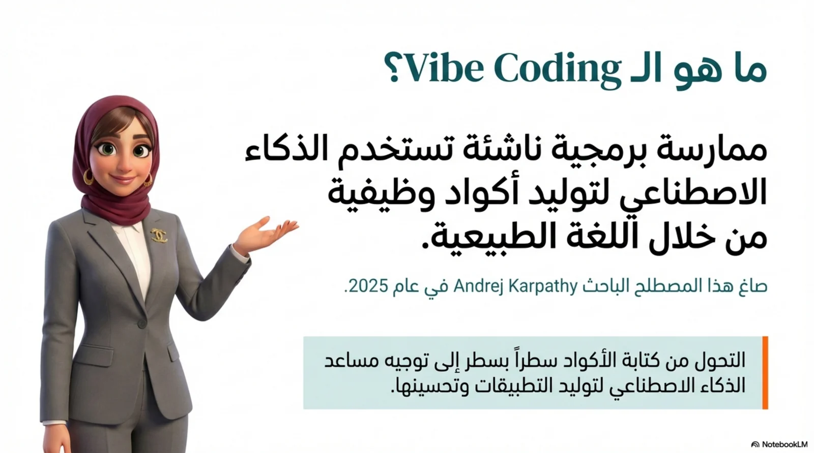
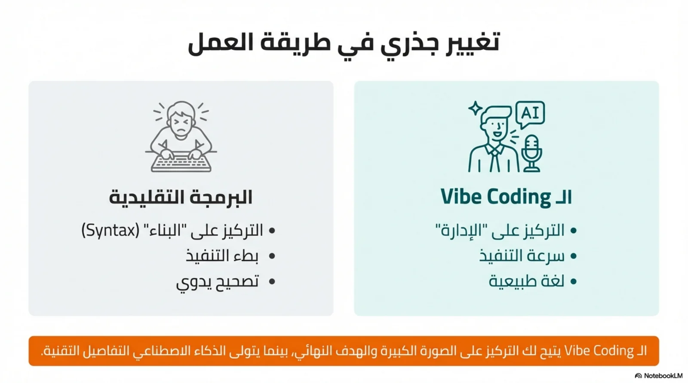
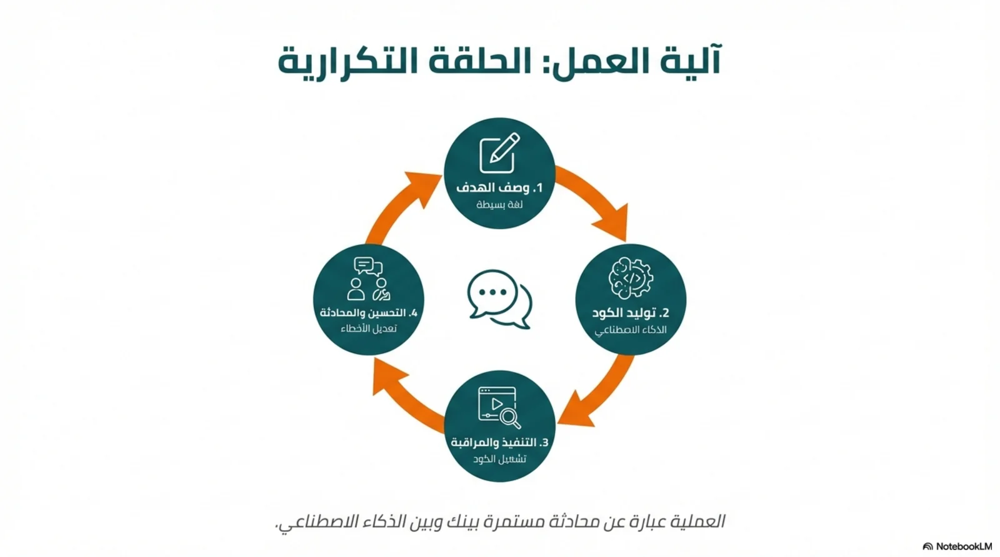
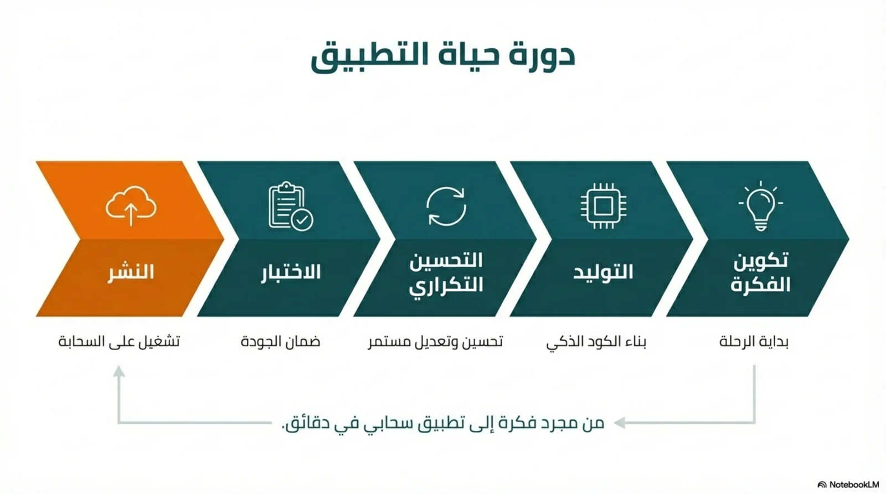
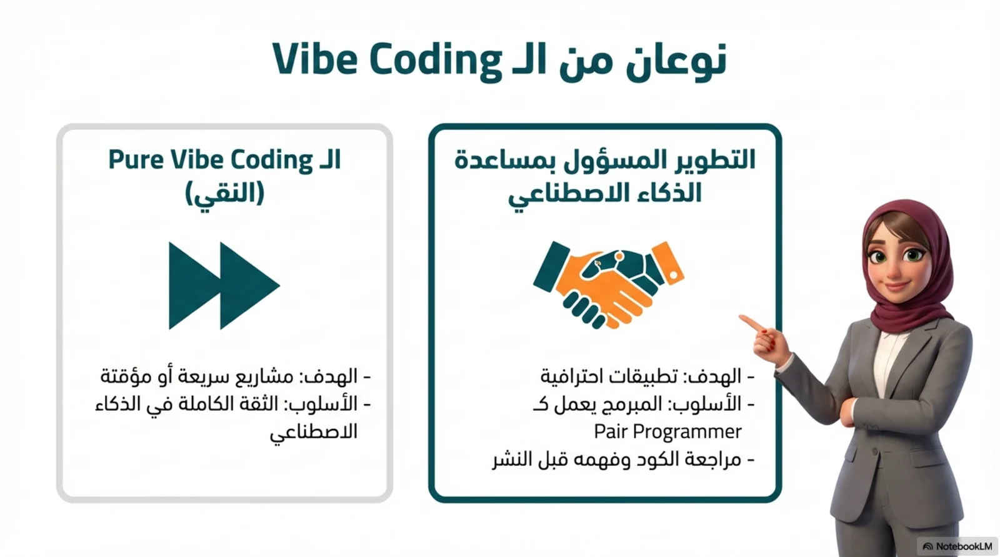
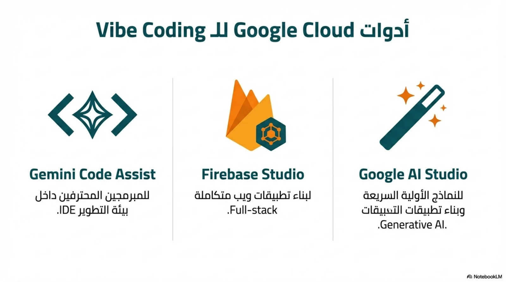
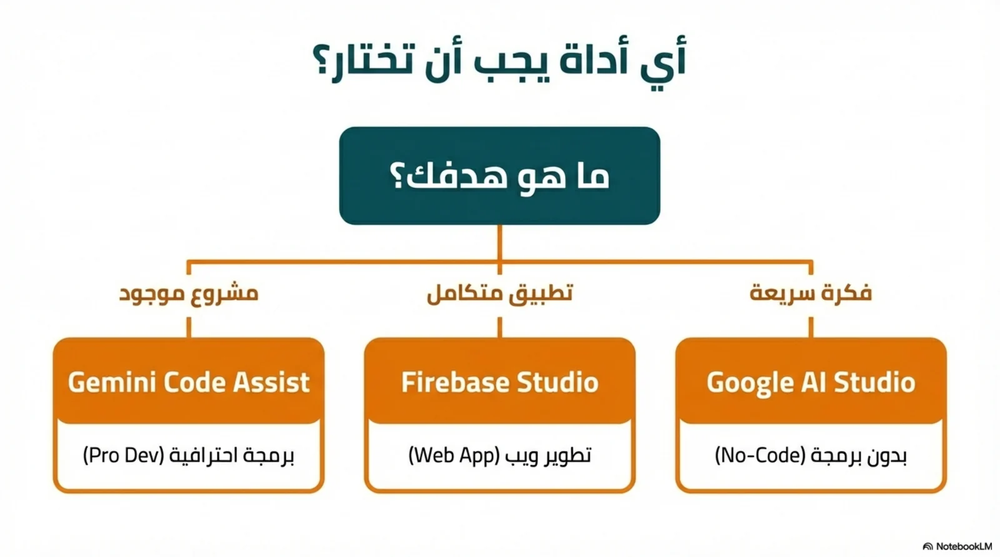
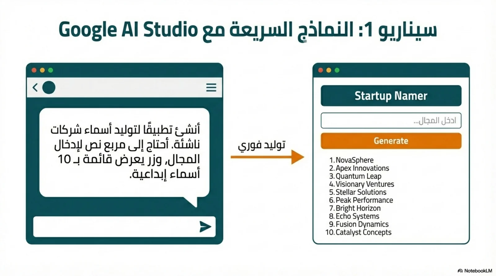
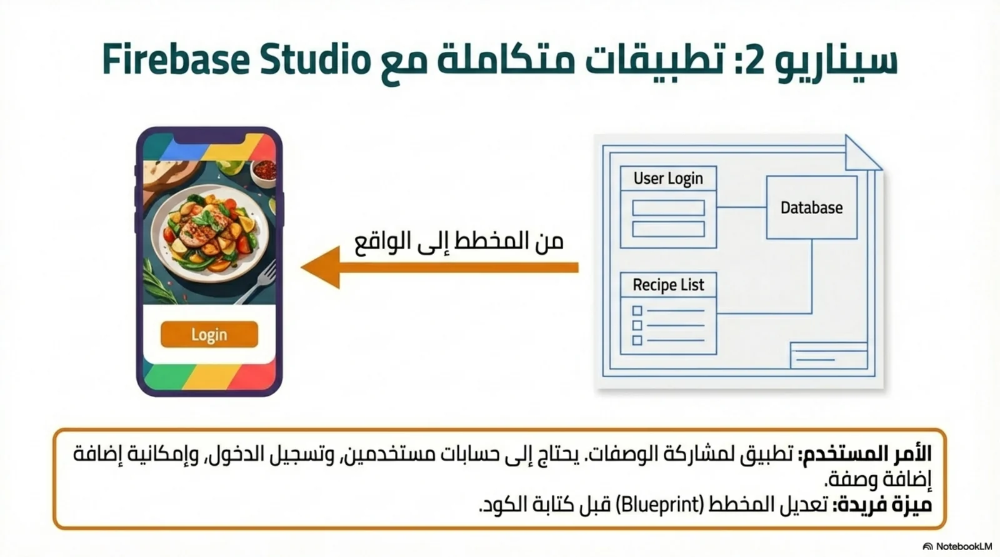
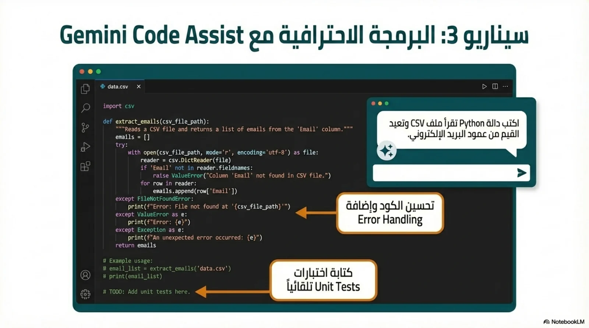
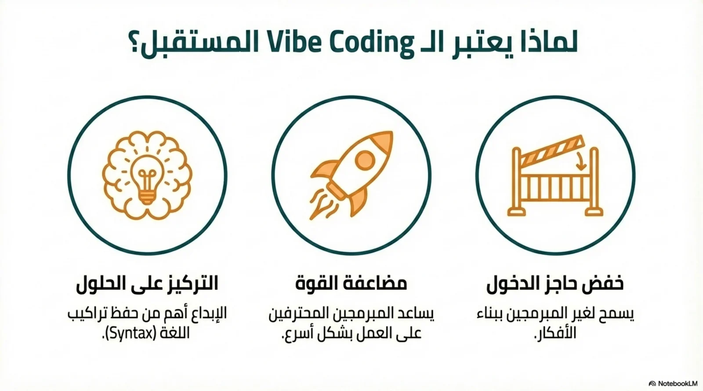
The one-page guide
This is the whole session on one sheet, in Arabic: the shift from writing code to directing it, the two kinds of vibe coding, the four steps of the loop, and which tool suits which level of experience. Select the image to enlarge it, and print it for the training room wall.
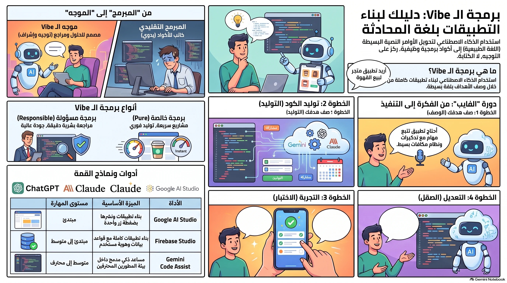
What you walk out with
One finished interactive app, and the language to explain how it was made.
- A working interactive quiz on your own lesson topicOne index.html file, offline, on any phone
- A master prompt you can reuse every weekRole, task, constraints and features, already written
- A clear explanation of HTML, CSS and JavaScriptThe frame, the paint, the engine
- A review checklist to run before any class sees itSix things to confirm, and one copy to keep
- Three repair sentences for when it breaksDescribe the fault, never edit the code at random
What vibe coding actually is
Turning educational thinking into a working app by describing precisely what you want.
Vibe coding means building software by describing the result in ordinary language instead of writing the code line by line. The term was coined by the researcher Andrej Karpathy in 2025. For a teacher, the shift is not about programming at all — it is about being precise. You already know what a good activity looks like, what the objective is, what a wrong answer needs to be told. Vibe coding is the practice of saying that clearly enough for a machine to build it.
Who does what
The architect
You set the learning objective, choose the level, decide what the activity must do, judge whether the result actually teaches, and take responsibility before a student ever opens it.
The builder
It writes the code, names the parts, wires the buttons, formats the layout and produces the file. It has no opinion about whether your lesson is sound, and it will build a weak activity just as willingly as a strong one.
Two ways of working, and the one you should use
Pure vibe coding
Fast, throwaway, total trust in the machine. You describe something, accept whatever comes back, and use it once. Fine for a personal experiment or a quick demonstration you will delete.
Responsible AI-assisted building — use this one
The same speed, with a human review before anything is published. You read the questions, check the feedback the app gives on a wrong answer, and try it yourself as a student would. Anything a class will open belongs in this column.
The honest limit: you do not need to be a programmer to build educational technology. You do need a clear learning objective, a precise prompt, and a responsible review before you share the app with students.
Every app is three layers, always the same three
Understand an app the way you understand a body: a skeleton, an appearance, and a brain.
Whatever the AI builds for you, and whatever tool you use to build it, the file it hands back contains exactly three kinds of instruction. Knowing which layer a problem lives in is what lets you ask for a change in one sentence instead of describing the whole app again. Select a layer to see what happens when it is missing.
The sentence to keep: HTML is the car frame, CSS is the paint and the wheels, JavaScript is the engine. Three layers, one car.
Test the difference yourself
Build the frame, then paint it, then start the engine — and watch the same car change three times.
Press the three stages in order. Nothing is replaced between stages — the same car simply gains a layer. Stage 3 is the one to linger on: press “Start the engine” and the frame and the paint do not change at all, yet the car begins to move. That is the moment a class understands what JavaScript is for.
Then take the same three layers onto a real page
The lab below has two more levels. Level 2 applies the same three stages to an actual working web page with its code beside it, so you can see exactly which lines arrived at which stage — and copy the finished code to run in the HTML Player. Level 3 is a twelve-card sorting activity you can use with your own staff.
Use it as a starter: show stage 1 and ask the class what is missing. Show stage 2 and ask what changed. Then start the engine without warning. Three minutes, no slides.
Now write the three layers yourself
Write an HTML page. Add CSS to it. Add JavaScript to it. One page, three steps, a live preview at every keystroke.
This is the only part of Level 3 where you type code, and it takes about fifteen minutes. You are not learning to be a programmer — you are learning what the AI is going to hand you, so that when something is wrong you can name the layer instead of describing the whole app again. The page you write in step 1 is the page you style in step 2 and the page you bring to life in step 3; nothing is thrown away between steps.
What your work is checked against: each step lists what it wants and why it matters, and ticks itself as you type. The last check of step 3 is different — it only passes when you press your own button in the preview and the page visibly changes. Nothing marks you; it explains.
Run it for real: when step 3 is complete, press “Copy my page”, open the Edulixa HTML Viewer and paste it. The page you wrote by hand travels exactly the same route as every AI-generated app in this level — run it, review it, then publish it on GitHub as a link.
Write a prompt that works
Four parts: the role, the task, the constraints, the features. Precision is what stops the AI guessing.
Role
Who the AI is being asked to be. “An educational app designer who follows CEFR and Depth of Knowledge” produces a different app from “a helpful assistant”.
Task
The exact thing to build, with the numbers in it: the topic, the grade, the language, how many questions, which question types, how long the timer runs.
Constraints
The rules the build must respect: one single offline file, vocabulary inside the CEFR level, nothing invented, no feature you did not ask for.
Features
What the finished app does for the learner: instant feedback with a reason, a countdown, a progress bar, a results screen, a certificate.
Prepare the context first
- Edit the fields, don't rewrite the promptChange the lesson name, the grade, the language, the CEFR level and the number of questions. Leave the structure alone — that structure is what makes the result consistent week after week.
- Attach the source when the content must be exactAdd the lesson PDF, or a clear photograph of the textbook page, whenever the material is long or the questions must follow a set source. The clearer the context, the better the educational result.
- Send it in a new conversationA fresh conversation carries no leftover instructions from your last lesson. Attach the file, paste the prompt, send once, and wait for the whole answer.
The master prompt — copy it and test it
[CHANGE THIS]Orange fields are the parts you replace. Select one and type over it.
Send it to either tool
Both tools accept this prompt and both return one complete HTML file. Send the same prompt to each of them once and compare the two apps — the differences will teach you more about prompting than any explanation.
Open a new chat, attach your lesson file if you have one, paste the prompt, and send. Ask for the code in one block.
chatgpt.com Open ChatGPTOpen a new conversation, attach the same lesson file, paste the same prompt, and send. Compare the result with ChatGPT's.
gemini.google.com Open GeminiA second prompt: make the AI build the layer test itself
This short prompt asks the tool to rebuild the three-stage car you just used. It is the fastest way to prove to a sceptical colleague that this works — and the result becomes a teaching resource you own.
Generate, review, then run it
The order matters. Nothing reaches a student before the review step.
- Wait for the whole answerLet the generation finish. Then check that the code has a proper beginning and a proper ending. If it stopped in the middle, reply “continue from the last line without repeating anything” — never paste an unfinished file.
- Save a copy of the original codeBefore you change a single thing, keep the first working version somewhere safe. Every teacher who skips this step eventually loses a working app to a small edit.
- Review it as a teacher, then as a studentConfirm six things: a clear title, a start screen, readable instructions, the questions, working buttons, and real feedback on a wrong answer. Then answer it yourself once, and deliberately get one wrong.
- Run it in the HTML PlayerPaste the code into the Edulixa HTML Viewer and press run. It checks the file for you first — whether it is complete, whether it needs the internet — then runs it, and you can put the preview full screen for a class.
- Share it, online or offlinePublish it on GitHub and send the link, or download the file and let students run it on their own device with no connection at all. The same link can be added to your learning platform.
Why one single file, every time
Ask for the HTML, the CSS and the JavaScript combined into one file called index.html rather than three separate files. One file can be sent through WhatsApp, opened straight from the viewer, and cannot arrive with a missing piece. Three files fail the moment one of them is left behind.
Fix it by talking to it
Do not edit the code at random. Describe the fault, and let the same conversation repair it.
The strongest habit in this whole level is this one: when something is wrong, say what is wrong in a full sentence, in the same conversation that produced the file. Paste the error message, or the section that misbehaves. A vague “it doesn't work” gets a vague repair; a precise description gets a precise one.
Notice the pattern: every repair sentence names the fault, states the fix, and protects the rest of the file. That last clause — “change nothing else” — is what stops a small correction turning into a new app.
Check your understanding
Ten questions on this session. Answer one and it tells you straight away why that answer is right or wrong — a mark on its own teaches nothing.
Part A · Vibe coding
What it is, its two types, what does not belong to it, which tools can actually build an app, and the fault that costs the most
Part B · HTML, CSS and JavaScript
The three layers, how to name the one a fault lives in, and what a standalone file means
Done
Worth reading again before you build:
Apps used in this session
Two apps of ours and two AI tools. Everything except the AI runs offline, on your own machine.
Build · Style · Drive
The three-layer lab: the car in three stages, the same three stages on a real web page with its code beside it, and a twelve-card sorting activity for your staff.
Open the labEdulixa HTML Viewer
Where the generated code becomes a running app. Paste the file, press run, review it full screen, then download it as index.html. It runs on your own computer with no internet connection and uploads nothing.
Open the viewerChatGPT
One of the two tools that will take the master prompt and return a complete single-file app. Attach your lesson material in the same conversation.
chatgpt.com Open ChatGPTGemini
The other tool. Send it the same prompt and the same attachment, then compare the two apps side by side before choosing one.
gemini.google.com Open GeminiOrder of use: the lab first, so the three layers are clear. Then ChatGPT or Gemini, to generate the app. Then the viewer, to run it and review it. Then GitHub, to turn it into a link. Never the other way round.
Put it online, so a class opens a link
The viewer runs your file on your own computer. GitHub Pages gives it an address anyone can open — free, and about five minutes the first time.
Sending a file to thirty students goes wrong in thirty ways: it lands in a downloads folder, it opens in the wrong app, someone gets an older copy. A link goes wrong in none of them, and when you fix a typo, every student sees the fix. GitHub is where the file will live. You do this once; after that, publishing a new activity takes two minutes.
-
Create your GitHub account
Go to github.com and choose Sign up. Use your work email. GitHub will send you a code to confirm the address — do that step now, because it will not publish anything for an unverified account.
The username you pick becomes part of every link you ever share, in the form
https://USERNAME.github.io/REPOSITORY/
Watch out: choose the username as carefully as you would choose a school email. Changing it later breaks every link you have already given out.
-
Create a repository for the activity
A repository — a “repo” — is simply one folder on GitHub. Press the plus sign at the top right and choose New repository.
Give it a short lowercase name with hyphens instead of spaces, such as
water-cycle-quiz
Set it to Public, leave the description empty if you like, and tick “Add a README file”. Then press Create repository.
Watch out: the free plan will not publish a private repository, so Public is not optional here. And keep spaces and Arabic letters out of the name — whatever you type ends up inside the link.
-
Upload your index.html
Download your activity from the viewer above, then in the repository choose Add file and Upload files. Drag the file in, write one line in the “Commit changes” box such as “first version”, and press Commit changes.
Watch out: the name has to be exactly index.html, all lowercase, sitting at the top level of the repository and not inside another folder. That one detail is behind almost every “my page shows 404”.
-
Turn on Pages
Open Settings at the top of the repository, then Pages in the left sidebar. Under “Build and deployment” set Source to “Deploy from a branch”, set the branch to main and the folder to / (root), and press Save.
This is the step that turns a stored file into a web page. Nothing about your activity changes — GitHub simply starts serving it at an address.
-
Copy the link, and test it the way a student will
Wait a minute or two, then reload that same Pages settings page. It shows a green line: “Your site is live at …”. That address is what you send.
Open it on your phone on mobile data rather than on the school network. That is the only test that proves it works for a learner sitting at home.
Watch out: the very first publish is slow. A 404 in the first two minutes usually means “not finished yet”, not “broken”. If it is still a 404 after five minutes, check two things only: the file is named index.html, and the repository is Public.
-
Change the activity later without changing the link
Open the repository, select index.html, press the pencil, paste the corrected version over it, and press Commit changes. The link stays exactly the same and updates within about a minute.
This is the real reason to publish rather than to send a file: you correct one wrong answer once, and every learner who opens the link gets the correction.
Before you publish anything, read this once: a public Pages site is readable by anyone who has the address, and search engines can find it. Never put a learner’s full name, mark, photograph, phone number or any personal detail inside the file. Your activity should ask for a first name only, keep it in the learner’s own browser, and send it nowhere.
GitHub
Create the free account and the repository here. One repository per activity keeps the links short and readable.
github.com Open GitHubGitHub Pages
GitHub’s own instructions, if a screen ever looks different from the six steps above. Interfaces change; the six steps rarely do.
docs.github.com/pages Open the guide